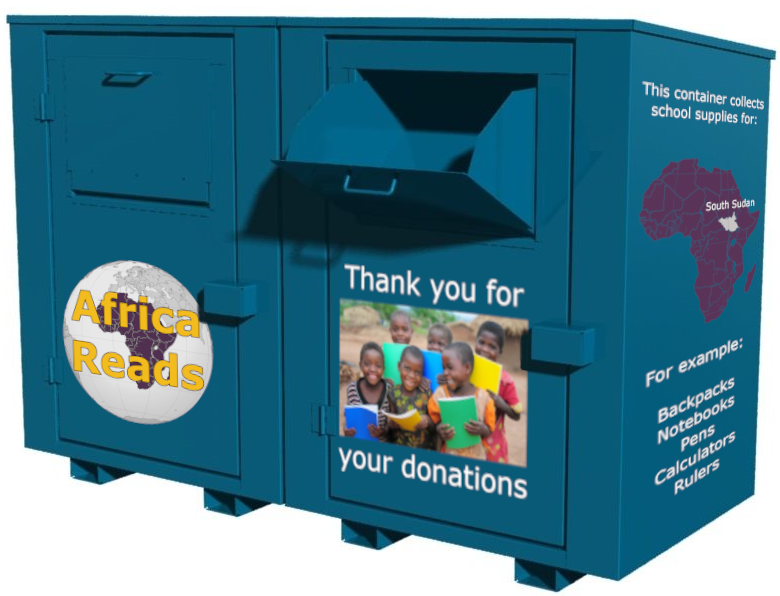

Why is the problem of Quality Education important?
In developing countries, schools and students have limited means to afford school supplies such as books, notebooks, backpacks and pens.
Studying without school supplies makes it difficult for students to learn and decreases the learning quality, outcome and cases other socio-economic problems.
UNICEF has identified thirteen barriers to education from which school fees, books and school supplies are located on the top of the list.
Countries in Africa suffer from unstable economies, droughts and conflicts. These factors contribute significantly to poverty levels and the educational crisis.
Countries that invest in education enable their citizens to gain skills that will help them find relevant and meaningful employment (Habitat, 2020).

What is our solution?
Our solution is to create a network of drop off locations across cities which consist of donation containers for school supplies such as:
- Backpacks
- Notebooks
- Pens
- Calculators
- Rulers
At each of the drop off locations you will find a secured drop off box to donate your schools supplies.
Every study semester we start a new campaign that focuses on a different region of Africa.

The container will be marked with stickers explaining where the donated supplies will go and how they will be used.
They will also include information describing the problems of the selected country, how their current educational system is and how the donated schools supplies
will help the students.
Once the donation period is over or our integrated container management system detects that the container is full,
a team of volunteers will collect the supplies and deliver them to our sorting center.
At the center we will access and sort the delivered supplies according to type, age group and usability.
The supplies that are too damaged will be recycled according to the local laws and regulations.
Notebooks, backpacks, rulers and other supplies are thoroughly accessed for damage and functionality.
After examination the items will be packed and shipped with the help of our partners.
All Donated books in Norwegian and other languages will be sorted out and accesses for damage.
Books in good conditions will be sold afterwards with the help of iBook and finn.no to raise funds for our operations.
Once we have secured funding that covers our organizational needs the rest of the donated books is donated to Universities and libraries in Norway,
where disadvantaged students can receive free study books for personal use.
The transportation will be organized by an agreement with UNICEF, The Red Cross and the authorities of the receiving country.
Based on the need of the specific recipient country the supplies can be delivered directly to the government of the country for distribution,
or to humanitarian organizations on the ground such as the Red Cross. Our partners on the ground will help us organize and distribute all supplies.
Students without school supplies will have a more challenging time learning and staying at school.
Our main goal is that our donated school supplies help the students focus on studying and help to lift the financial burden from the parents and schools.
We expect that our help will lead to an increasing number of young people having relevant skills and an relevant education for higher quality employment.
Some of the students will become teachers which will help their countries develop further and create a brighter future for all.